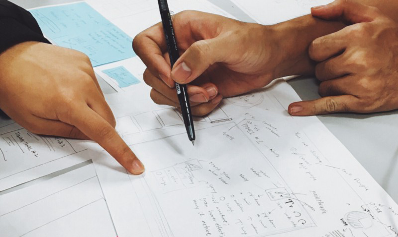
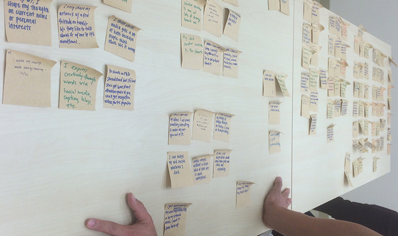
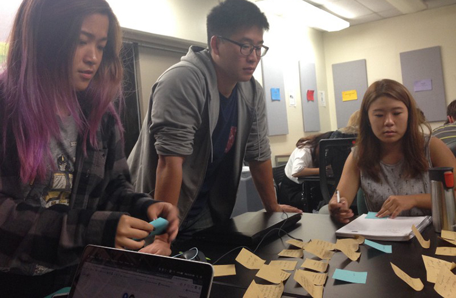
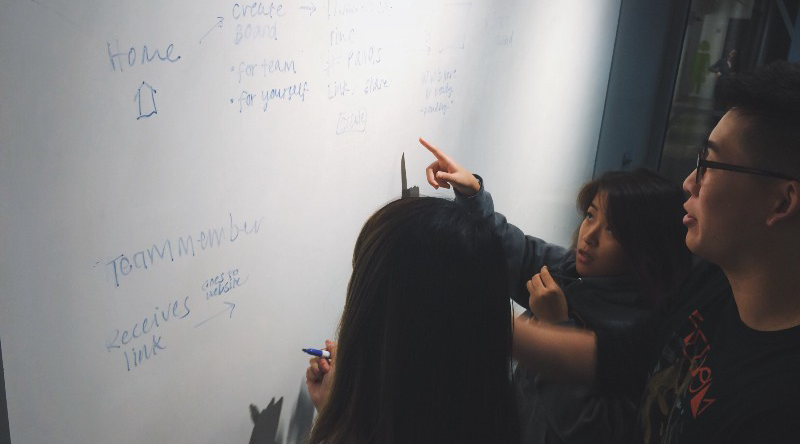

Platform: Web Application
Tools: Adobe Illustrator, HTML, CSS, Photoshop, Open Source
Purpose: Make the Ideation Phase for Teams easy
To put it simply, this project was an assignment given to me and my teammates in one of the design-based classes that UCSD offers. The class structure was a project oriented class, where students were expected to form teams of 5-7, coordinate team meetings, and flesh out a digital application designed to meet a problem space of their choice all in a 10 week period. This was one of the first group-based projects I have had a chance to contribute to so I learned a lot about being part of design-team and what it takes to foster a friendly and efficient design environment.
In a sense this class was very difficult because as soon as we got in to our design teams our teacher through us in the water with little to no instruction on what to make. This was both a liberating and daunting moment; we had the power to create anything that wanted! But at the same time it had resonate with at least a majority of our team and be somewhat applicable in the real world. We didn’t want to be designing an app that no one would want to use. From the get go it seemed like many of us already had a few ideas that we thought would make the a good app. As we thought about these ideas for the first 2 weeks. We realized that in order to make a useful app we need to take a step back from thinking about the product and start with questions like “who are we designing for?” and “what needs do these people have?”. And from that we set course to do some user research and really develop our need-finding stage.
For me personally, this was the first time I had conducted user research for a product so it was difficult at times but with the guidance of some of my more experienced teammates we managed to pull some good data. From the get go we knew we wanted to design a product with college students being the main target audience. This made it easy for us to conduct research on potential consumers since we all happen to attend UCSD at the time. But before we went out asking questions and finding needs within our target group we wanted to focus on a more specific problem and see if we could find a problem space within that realm.
In the end our group decided to tackle the dilemma of college students’ lack of motivation to get creative. It’s kind of a sensitive topic, since no one wants to hear that they are not creative, but something that it relevant in today’s progressive mindset. Often times we (college students) find ourselves locked in our studies and work getting in to a routine of things. Because of this when called to find solutions to problems or plan events we often look to the fastest and easiest solution which probably aren’t the best or the most fun solution. So when we do our UX research, we asked questions to find out the underlying reason why college students seem to be neglecting their creative side.
Through our research we ended up finding out that this problem is uncommon and that it would be quite difficult to create a product that could effectively aid people from all sorts of backgrounds. Despite knowing it would be difficult we decided to pursue this idea. Some of the things we found regarding creativity were, but not limited too: • When asked what their creative outlet was most responded that they don’t have the time to pursue art or music now a days • Most people felt that they get the most creative when under pressure (not too much though) • People felt that they would be motivated if they had peers.
Idea8 was actually inspired by the ideation process called crazy8s where teams were called to rapidly brainstorm 8 ideas individually and collaborate amongst themselves to come up with a solution together. As a design team we also used this technique in our ideation phase and thought it would could be a great solution to our creativity crisis. From there we decided to create a digital platform of crazy8s so that teams could communicate and collaborate remotely and effectively. When making this product we envisioned students who had trouble finding inspiration for their next art project or teams who need to collaborate to get to a solution to find this useful.